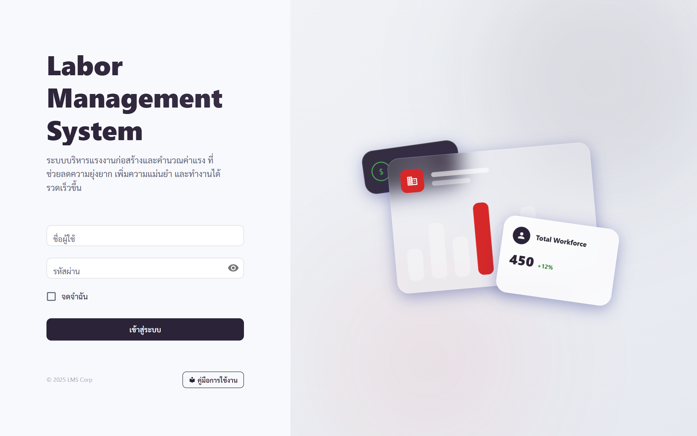
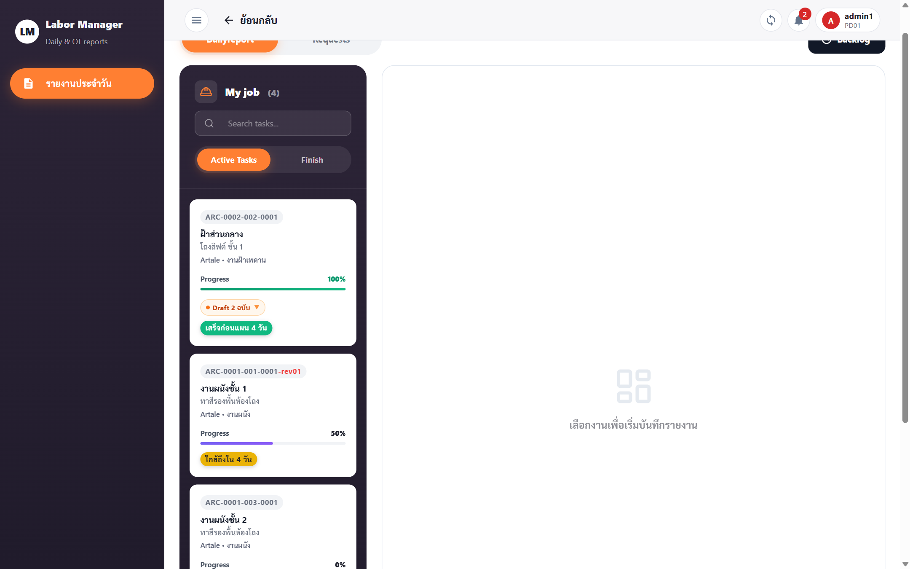
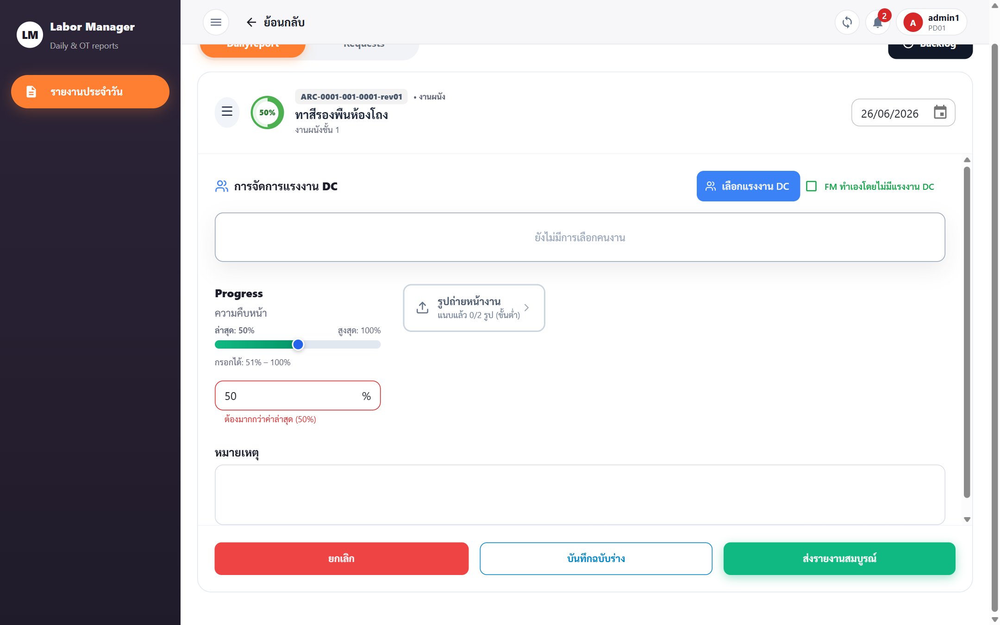
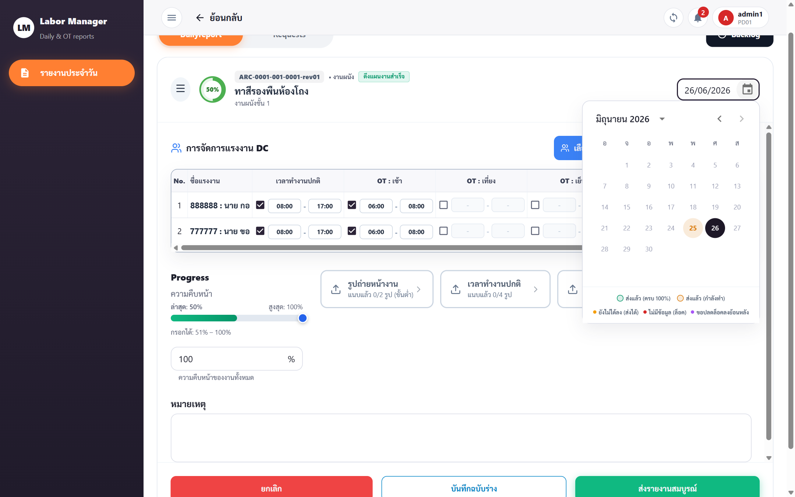
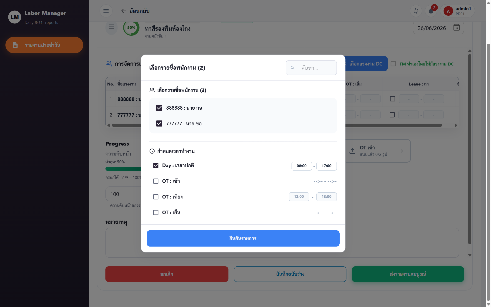
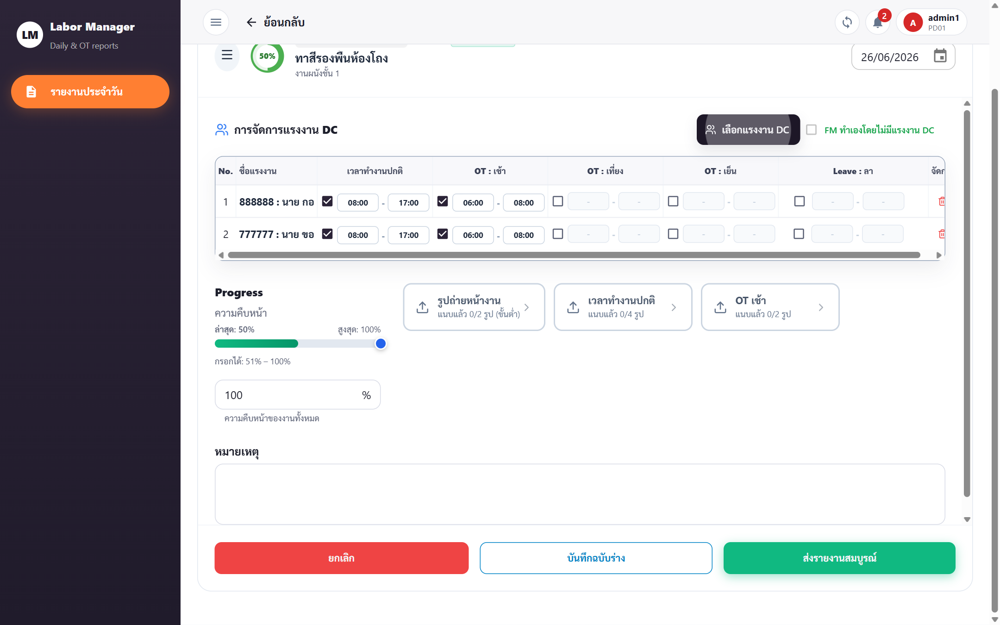
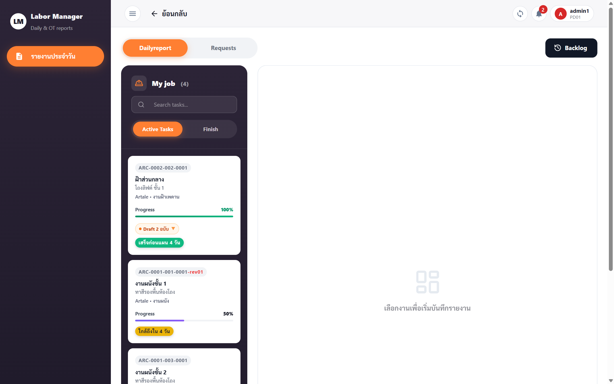
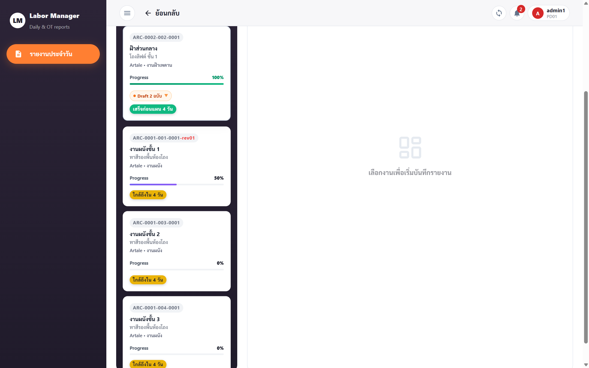

Labor Management System · รายงานประจำวัน
ทำตามทีละขั้นตอน — ไม่ต้องข้าม
เปิด browser แล้วไปที่หน้า Login — กรอก ชื่อผู้ใช้ และ รหัสผ่าน ที่ได้รับมา แล้วกด เข้าสู่ระบบ

หลัง login สำเร็จ ระบบพาไปหน้า รายงานประจำวัน อัตโนมัติ — จะเห็น Sidebar ซ้ายมือแสดงรายการงานทั้งหมดที่ได้รับมอบหมาย
ใน Sidebar ให้ คลิกที่การ์ดงาน ที่ต้องการลงรายงานวันนี้ — ฝั่งขวาจะเปลี่ยนจาก "เลือกงานเพื่อเริ่มบันทึกรายงาน" เป็นฟอร์มของงานนั้น

หลังคลิกงาน ฟอร์มจะเปิดทางขวามือ แสดงชื่องาน รหัสงาน วันที่ปัจจุบัน และส่วนจัดการแรงงาน — ระบบเลือกวันที่ปัจจุบันให้อัตโนมัติ

กดปุ่มปฏิทิน 📅 ด้านบนขวาของฟอร์ม — ปฏิทินจะเปิดขึ้น ให้คลิกวันที่ต้องการ

หลังเลือกวันแล้ว ฟอร์มจะแสดงตารางแรงงาน — แต่ละแถวคือ 1 คน พร้อมเวลา Shift ที่ตั้งไว้ ตรวจสอบหรือแก้ไขได้
ถ้าต้องการเพิ่มหรือเปลี่ยนแรงงาน ให้กดปุ่ม เลือกแรงงาน DC (สีส้ม) — dialog จะเปิด ค้นหาชื่อแรงงาน ติ๊กเลือก ตั้ง Shift เวลา แล้วกด ยืนยันรายการ

มุมขวาบนของส่วนแรงงาน มี checkbox "FM ทำเองโดยไม่มีแรงงาน DC" — ติ๊กถ้างานวันนั้น FM ดูแลเองโดยไม่มี DC

ในส่วน Progress มีปุ่มแนบรูปตาม Shift ที่ใช้ — กดแต่ละปุ่มเพื่ออัปโหลดรูปถ่าย ตัวเลขจะอัปเดตเป็น "แนบแล้ว N/2 รูป"
| ประเภทรูป | จำนวนขั้นต่ำ | หมายเหตุ |
|---|---|---|
| รูปหน้างาน (รูปล่าง) | 2 รูป | บังคับทั้ง Draft และ Final Submit |
| แรงงาน Shift ปกติ (Day) | 2–4 รูป | ขึ้นกับช่วงเวลา Shift (เข้า/พักเที่ยง/เข้าบ่าย/ออก) · บังคับเฉพาะ Final Submit |
| OT เข้า / OT เที่ยง / OT เย็น | 2 รูปต่อ Shift | เฉพาะ Shift ที่ใช้ · บังคับเฉพาะ Final Submit |
กรอก เปอร์เซ็นต์ความคืบหน้า ของงานวันนี้ในช่องตัวเลข (0–100%) และกรอก หมายเหตุ ถ้ามีสิ่งที่ต้องแจ้ง FM
ที่ด้านล่างสุดของฟอร์มมี 3 ปุ่ม:
กลับมาดู Sidebar — การ์ดงานจะแสดงป้ายสถานะล่าสุด แท็บ Active Tasks คืองานที่ยังทำอยู่ แท็บ Finish คืองานที่ส่งครบแล้ว
| Status | สี | หมายความว่า |
|---|---|---|
| Draft | ■ เหลือง | บันทึกร่างไว้ ยังไม่ส่ง |
| Submitted | ■ น้ำเงิน | ส่งแล้ว รอ LD/PM/PE/OE ตรวจ |
| Verified | ■ เขียว | LD/PM/PE/OE ตรวจผ่านแล้ว |
| Locked | ■ แดง | ล็อกแล้ว แก้ไขไม่ได้ |
ถ้าเลือกวันในปฏิทินแล้วเห็นสีแดงหรือฟอร์มไม่เปิด ให้กดปุ่ม "ขอลงข้อมูลย้อนหลัง" — ระบบจะส่งคำขอให้ LD / PM / PE / OE อนุมัติปลดล็อก
ส่งแผนงานล่วงหน้าก่อนวันทำงานจริง — ระบบจะดึงมาให้อัตโนมัติในวันนั้น
ที่ด้านบนของหน้ามี 2 แท็บ — กดแท็บ Requests เพื่อสลับเป็นโหมดวางแผนล่วงหน้า (แท็บสีส้ม = แท็บที่เลือกอยู่)

คลิกเลือกงานใน Sidebar เหมือนเดิม → แล้วคลิกวันที่ อนาคต ในปฏิทิน (พรุ่งนี้ขึ้นไป) — ฟอร์มวางแผนจะเปิดขึ้น
กรอกแรงงาน DC ที่วางแผนจะใช้ ตั้ง Shift เวลา ใส่ Progress ที่คาดว่าจะได้ แล้วกดปุ่ม บันทึกแผนงานล่วงหน้า

เมื่อถึงวันที่วางแผนไว้ สลับกลับแท็บ Dailyreport → เลือกงานเดิม → เลือกวันนั้น — ข้อมูลแรงงานและ Shift จะปรากฏอัตโนมัติ ตรวจสอบ แก้ไขถ้าจำเป็น แล้ว Submit ปกติ
กดที่คำถามเพื่อดูคำตอบ